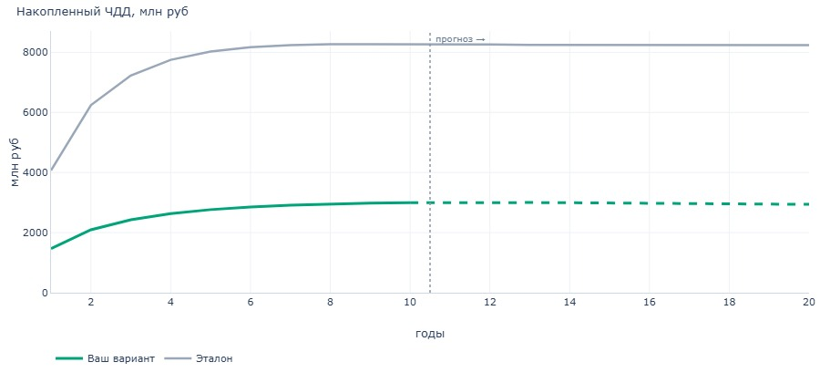

{
const p = { ...core.DEFAULT_PARAMS, ...core.DEFAULT_COSTS }, M = (x) => (x / 1e6).toLocaleString("ru-RU");
const rows = [
["Цена нефти (netback)", `${p.price_oil.toLocaleString("ru-RU")} руб/т`, "выручка; уже за вычетом НДПИ и транспорта"],
["Скважина ВС", "40–95 млн руб (по объекту)", "растёт с глубиной"],
["ГС длиной L", "скв. × (1,2 + 0,5·L/1000)", "1000 м – ×1,7"],
["ГРП 40 / 80 / 120 м", `${M(p.frac_cost)} / ${M(p.frac_cost * 1.6)} / ${M(p.frac_cost * 2.4)} млн руб`, ""],
["МГРП n стадий", "ГРП × (0,4 + 0,6·n)", "5 стадий по 80 м – 108 млн руб"],
["ЭЦН", `${M(p.esp_cost)} млн × (0,5…2,4)`, "по типоразмеру"],
["Перевод под закачку", `${M(p.conv_cost)} млн руб`, ""],
["ОПЗ / ГДИС", `${M(p.stim_cost)} / ${M(p.pta_cost)} млн руб`, "ГДИС + недобор нефти"],
["Сейсмика 3D", "12 скважин объекта", "480–1140 млн руб"],
["Подготовка жидкости", `${p.lift_cost} руб/м³`, "вся жидкость – и нефть, и вода"],
["Водоподготовка для ППД", `${p.inj_cost} руб/м³`, ""],
["Электроэнергия", `${p.elec_cost} руб/кВт·ч`, "ЭЦН и КНС"],
["Обслуживание скважины", `${M(p.well_opex)} млн руб/год`, "нагнетательная ×0,5, остановленная ×0,25"],
["Лимит долга", `${M(p.credit_limit)} млн руб`, "игра начинается с нуля и идёт в кредит"],
];
return Inputs.table(rows.map(([a, b, c]) => ({ "Статья": a, "По умолчанию": b, "Комментарий": c })), { layout: "auto", rows: 15 });
}7 Экономика, ЧДД и оценка
Нефть добывают ради денег. В игре половина оценки – ЧДД (чистый дисконтированный доход), и многие решения, которые кажутся «технически правильными» (пробурить ещё скважину, сделать ГРП, поставить ЭЦН побольше), экономически проигрывают. Эта глава учит считать деньги так же, как их считает игра.
7.1 Денежный поток
Ядро ведёт учёт в натуральных единицах (тонны нефти, кубометры жидкости и закачки, кВт·ч, скважино-годы) и переводит их в деньги одной функцией flowOf:
CF = Q_н Ц_н - V_ж c_{подг} - V_{зак} c_{вод} - (E_{ЭЦН}+E_{КНС})\,c_{эл} - n_{скв.-лет}\,c_{обсл} - \text{CAPEX}.
Заметьте две вещи:
- Вода стоит денег. Каждый кубометр добытой воды – это 100 руб подготовки плюс электроэнергия подъёма, а выручки не даёт. При обводнённости 95 % на тонну нефти приходится около 23 м³ жидкости.
- Скважина стоит денег, даже когда стоит. Обслуживание 4 млн руб/год у работающей, 1 млн – у остановленной.
7.2 Когда скважину пора остановить
Добывающая приносит деньги, пока выручка от нефти больше затрат на жидкость, электроэнергию и обслуживание. Найдём предельную обводнённость:
На маловязкой нефти с высоким дебитом предел обычно 95–98 %: поэтому в игре есть кнопка «Отключить добывающие с обводн. > N %» (по умолчанию 95 %). Но не спешите: остановленная скважина не только экономит, но и перестаёт отбирать закачанную воду – поток перераспределится к соседям. Часто выгоднее перевести обводнённую добывающую под закачку (5 млн руб), чем остановить: так эталон ЮВ1 переводит под закачку 4 обводнённые добывающие.
7.3 Чистый дисконтированный доход
Деньги сегодня дороже денег завтра: их можно вложить под процент. ЧДД приводит годовые потоки к сегодняшнему дню:
\text{ЧДД}=\sum_{n=1}^{N}\frac{CF_n}{(1+r)^n},\qquad r = 10\ \%.
Капитальные затраты первых лет (бурение, сейсмика) дисконтируются слабо, а выручка десятого года – сильно (делится на 2,6). Отсюда главное следствие для игры: быстрый ввод скважин и ранняя добыча ценятся больше, чем та же нефть позже.
import numpy as np, matplotlib.pyplot as plt
# скважина: стоит 80 млн, дебит нефти 40 т/сут в первый год и падает на 15 % в год
capex, q0, decline, price, opex = 80e6, 40, 0.15, 12000, 4e6
years = np.arange(1, 21)
oil = q0 * 365 * (1 - decline) ** (years - 1) # т/год
cf = oil * price - opex - 100 * oil / 0.86 * 1.5 # выручка − обслуживание − подготовка жидкости (условно)
cf[0] -= capex
for r in [0.0, 0.1, 0.2]:
npv = np.cumsum(cf / (1 + r) ** years) / 1e6
plt.plot(years, npv, label=f"ставка {int(r * 100)} %")
print(f"ставка {r:.0%}: ЧДД за 20 лет {npv[-1]:7.1f} млн руб, окупается на {int(np.argmax(npv > 0)) + 1}-й год")
plt.axhline(0, color="gray"); plt.xlabel("год"); plt.ylabel("накопленный ЧДД, млн руб"); plt.legend()7.4 Оценка в отчёте
В конце партии игра считает ещё 10 лет прогноза при неизменном фонде и режимах и сравнивает ваш вариант с эталоном – разработкой, найденной оптимизатором для того же объекта при тех же ценах. Оценка – среднее баллов по КИН и по ЧДД за 20 лет:
\text{балл}(v)=\begin{cases}100\,\dfrac{v}{v_{эт}}, & v\le v_{эт},\\[2mm] 100+40\ln\dfrac{v}{v_{эт}}, & v>v_{эт},\end{cases}\qquad \text{оценка}=\tfrac12\,\text{балл(КИН)}+\tfrac12\,\text{балл(ЧДД)}.
Убыточный вариант (ЧДД ≤ 0) получает 0 баллов по ЧДД.
Шкала: ≥ 100 – выше эталона, 90–100 – отлично, 75–90 – хорошо, 55–75 – удовлетворительно. Превзойти эталон можно, но отдача логарифмическая: +25 % к эталону дают лишь ≈ 109 баллов. Зато провал по ЧДД (убыток) обнуляет половину оценки – не уходите в минус ради КИН.

7.5 Типичные экономические ошибки
- Сейсмика + 20 скважин на БВ8. Высокая проницаемость – каждая скважина дренирует большую площадь; эталон обходится восемью (4 добывающие и 4 нагнетательные). Лишние скважины по 70 млн руб не окупаются.
- ГРП в русле. 32 млн руб за прирост дебита на 10–20 % (Глава 5).
- ЭЦН-1250 на скважину с дебитом 100 м³/сут. КПД 15–20 %, электроэнергия съедает выручку.
- Высокое давление КНС «на всякий случай». Энергия закачки пропорциональна давлению КНС.
- Не отключать обводнённые скважины. При 99 % воды каждая скважина теряет несколько миллионов в год.
7.6 Вопросы и задания
- При какой цене нефти скважина с дебитом жидкости 200 м³/сут при 95 % воды становится убыточной?
- Почему ЧДД зависит от того, в каком году вы пробурили скважину, даже если нефти она добыла столько же?
- Игрок получил КИН 110 % эталона и ЧДД 60 % эталона. Какая оценка? Что выгоднее улучшать?